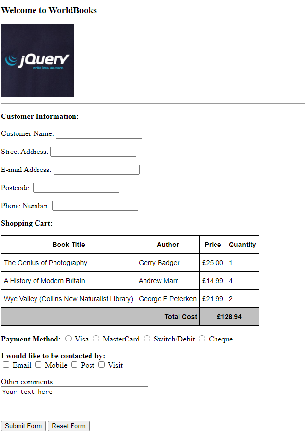
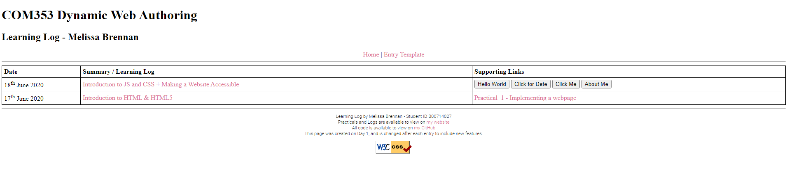
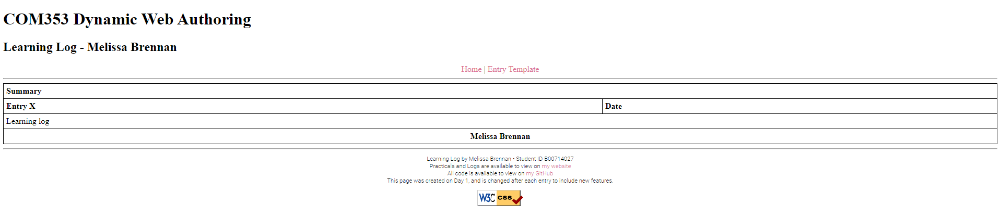

During this session, I learned the basics of HTML and CSS. I was able to:
Create a file structure for a web project.
Create a basic website which uses headings, images, form inputs, lists and links.
Link in a Cascading StyleSheet (CSS) to style the webpages.
Create ID's and Classes in CSS to style the webpages.
Use selectors such as :hover to change the colour of links when the user hovers over the element.
Practicals
The first practical can be viewed here. A screenshot of the website can be found below:

Fig.1 The website I created using the mockup provided by "a client"
Whilst creating this website, I learned how to use different HTML elements such as:
Headings (using the h(x) tags)
Images (using the img tag)
Paragraphs and Labels (using the p and label tags)
Textboxes (using the input tag for the single line textboxes and the textarea tag for multiline textboxes)
Radio Buttons and Checkboxes (using the input tag, but changing the type of input through the type attribute)
Buttons (using the button tag)
Tables (using the table tag, optionally followed by thead, tbody and tfoot to define the areas of a table)
Table Rows (using the tr tag for table rows)
Table Headings and Table Data (using the th tag for headings and td tag for data)
I also created the base for the learning log today. This is where I used most of the features from above, such as linking through the CSS, using classes, IDs and selectors to customise the style of the webpages.

Fig.2 A screenshot of the learning log home page. (I decided to add these images on the second day, therefore two dates can be seen on the screenshot)

Fig.3 A screenshot of the entry template. I created this to have the base layed out, and available to add new features to as I add more entries.